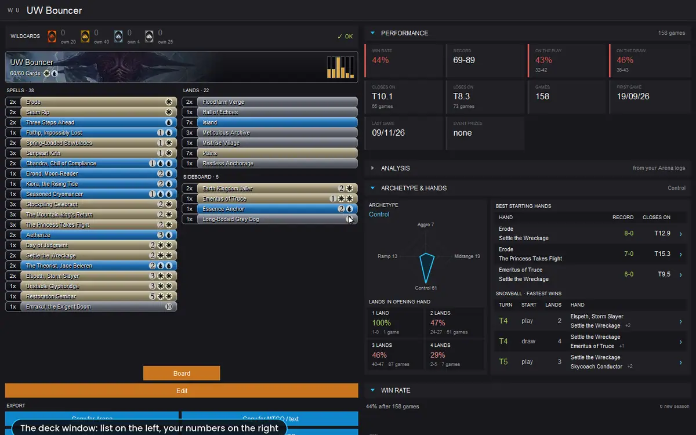

Guide · Your decks
Your decks
Every deck you have on Arena right now, with the record of your own games, plus the decks Arena gave you, your wishlist and the decks you are building. One click opens a deck window with everything the app knows about it.

Groups and sections
Decks sit in groups, each with a large title and the number of decks inside. Click a title to fold or unfold the group; the app remembers what you closed.
| Group | What is in it |
|---|---|
| Standard, Explorer, Historic… | Your own Arena decks, one group per format (Standard, Standard Bo3, Alchemy, Explorer, Historic, Timeless, Brawl and the others Arena uses). |
| Arena decks | The decks Arena gave you, such as the starter and Dual Color Precons decks, with the record of the games you played with them. |
| Wishlist | Decks you want to build: from the meta, imported from a list, or copied from another deck. The first card, + Add deck, imports a new one. |
| Deck builder | Your own versions, which you can change in the builder. The first card, + New deck, opens the builder on an empty deck. |
The decks are the ones Arena has now, read from your log: a deck you delete in Arena disappears here too, and a deck you created but never played shows as never played.
What a deck card shows
- The cover: the art of the rarest card of the last list you played.
- Colours and the last game: the mana symbols, and a dot that is green when you played the deck in the last seven days.
- Record and Games: wins and losses, and how many games, counted over every constructed event you played it in.
- Win rate in large figures, blue above 50% and red below, and the View deck button. The whole card opens the deck.
Sort, Show and Import
| Control | What it does |
|---|---|
| Sort by | Last game, Win rate, Games, Name or First game. |
| Show | Decks you own (default) hides the decks with cards you do not have, such as imported lists you never completed; All decks shows them. |
| Import | Copy a deck list (from Arena's Export, MTGO, or a website) and press Import: it becomes a Wishlist deck and opens. |
| Trash (on Wishlist and Deck builder cards) | Removes the deck at once. Arena decks are deleted in Arena: the app never writes into the game. |
The deck window
Click a deck and its window opens above the app. It is the same window for every deck, wherever you open it from: yours, Arena's, the wishlist, the Deck builder group or the meta. A value the app does not have yet shows as “-”.

On the left: the list
- Edit and Add to wishlist, the orange buttons at the top. On a deck you cannot change directly (a meta deck, a deck of yours on Arena, an Arena deck) Edit first makes a copy in the Deck builder group and opens that copy in the builder; the original stays as it is. Add to wishlist is hidden when the deck is already in your wishlist.
- The wildcards the deck still needs, by rarity, with the ones you have (red when you do not have enough). They need your collection linked.
- The deck header: art, name, colours, card count and the mana curve.
- Spells, Lands and Sideboard, sorted by mana value, as in Arena. Hover a card to see it large, with its rarity, the copies you own and its paper price.
- Board, under the list: the deck as real cards on a sheet, to look at. To change it, go through Edit. See Board.
- Export: Copy for Arena (then Decks › Import in Arena), Copy for MTGO / text, and the same two as a saved text file. Commander and companion go where each client expects them.
- Below Export, the other actions of that kind of deck, such as Copy to Deck builder on a wishlist deck.
On the right: the sections
The data column is divided into sections that fold and unfold; the app remembers which ones you keep open, for every deck.
| Section | What it holds |
|---|---|
| Performance | Win rate, record, games, on the play and on the draw, the average turn of your wins (Closes on) and of your losses (Loses on), first and last game, event prizes won with the deck. |
| Analysis | Which cards win and which lose, from your own games. It has its own page: Deck analysis. |
| Archetype & hands | A small graph that places the deck between Aggro, Midrange, Control and Ramp (an estimate from the costs and rules text of its cards); the best starting hands; the fastest wins; the win rate by number of lands in the opening hand. |
| Win rate | The win rate of the deck game after game. |
| Deck build | Format and legality, cards you own, lands and the chance of an opening hand with 2 to 5 lands, land drops on turns 2, 3 and 4, sources per colour, the closest meta deck. |
| Prices | Paper price (euro and dollars, the cheapest printing) and MTGO price in tix. Alchemy and Arena-only cards have no price. |
Best starting hands and fast wins
Best starting hands lists the pairs of spells you kept together in your opening hand at least three times, with their record and the average turn you closed the game. Snowball lists your fastest wins with the hand you kept.
Click a row and a window shows the real hands, card by card: the cards of the pair have a blue frame, and the header says whether you won, on which turn, on the play or on the draw, and how many lands you had. Use ‹ › (or the arrow keys) to go through the other games with the same pair, wins first. Esc closes it.
Starting hands need games recorded with Detailed Logs on. With few games, a pair at 3-0 is a hint, not a rule.
From a meta deck to your own version
The quick way: open a deck in Meta and press Edit. A copy appears in the Deck builder group and opens in the builder; the meta deck stays as it is.
If you want to keep the original next to your version:
- In Meta, open the deck and press Add to wishlist. The original stays in your wishlist, untouched.
- In the wishlist deck's window, press Copy to Deck builder. The copy, named “… (lab)”, is yours to change.
- Press Edit on the copy: the builder opens over your collection. See Deck builder & mana base.
- Export it to Arena when you are happy with it, and play. Your games fill the rest of the window.